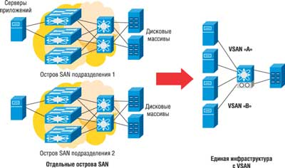
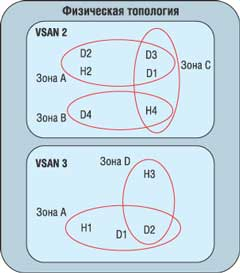
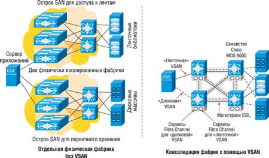
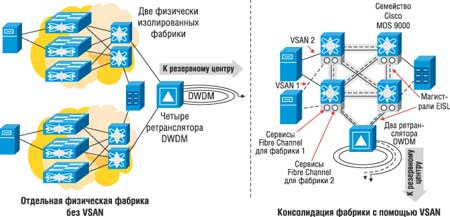

По материалам Cisco Systems.
При проектировании и развертывании сетей хранения SAN необходимо учитывать ряд факторов, в числе которых - высокая доступность, масштабируемость и безопасность. Для решения этих задач в семействе многоуровневых коммутаторов Cisco MDS 9000 существуют многочисленные программно и аппаратно реализованные функции, что позволяет проектировщику сетей хранения с меньшими затратами построить более надежную SAN.
Функции зонирования фабрики (fabric zoning) - это фундаментальное свойство современных коммутаторов Fibre Channel. Зонирование ограничивает взаимную доступность и соединения разных устройств, подключенных к общей SAN, основанной на Fibre Channel. Хотя зонирование обеспечивает базовую функцию безопасности в фабрике, оно не дает никаких усовершенствований с точки зрения масштабируемости и доступности самой фабрики.
Для улучшения масштабируемости и доступности фабрики, а также расширения сервисов безопасности подобного зонирования корпорация Cisco Systems (http://www.cisco.com) разработала технологию виртуальных SAN (Virtual SAN, VSAN) для многоуровневых коммутаторов семейства Cisco MDS 9000. Подобная VSAN вместе с аппаратно реализуемым зонированием обеспечивает новые средства проектирования SAN, улучшающие масштабирование, безопасность и управляемость. Кроме того, VSAN позволяет на основе общей физической инфраструктуры создавать полностью изолированные топологии фабрики, каждая из которых имеет собственный набор сервисов фабрики. Поскольку у каждой VSAN есть собственный сервис зонирования, он конфигурируется независимо от других и не влияет на остальные VSAN и сервисы зонирования.
Обе технологии - VSAN и зонирование - взаимно дополняют друг друга, решая разные проблемы сетей Fibre Channel. Понимание преимуществ каждой из этих двух технологий позволит получить максимальный эффект от их применения.
Сервис Fabric Zoning
Сервис зонирования в Fibre Channel предназначен для безопасной работы устройств, использующих одну фабрику. Основная цель этого сервиса - предотвратить доступ определенных устройств к другим устройствам в фабрике. Поскольку в сети могут быть разные типы серверов и устройств хранения, то безопасность крайне важна. Например, если хост получит доступ к диску хоста, использующему другую операционную систему, это может привести к порче данных на диске. Для устранения риска при хранении важных данных в SAN зонирование позволяет применить карту безопасности, указывающую, какие устройства (хосты) какие целевые устройства могут видеть.
Однако у зонирования есть свои ограничения. В частности, оно только предотвращает связь с неавторизованными устройствами и представляет собой распределенный сервис, общий для всей фабрики, поэтому любые изменения в конфигурации зон нарушают работу всех соединений фабрики. Кроме того, зонирование не решает проблему доступности или масштабируемости инфраструктуры Fibre Channel.
Преимущества зонирования
Безопасность устройств
При использовании зонирования в фабрике Fibre Channel устройство может общаться только с устройствами, находящимися в той же зоне. Как следствие, можно разделять устройства на основе доступа к определенному устройству хранения (целевому устройству) - это обязательное условие, если одну физическую фабрику используют разные ОС. Большинство ОС не могут читать или понимать структуру блоков или файловой системы других ОС. Например, если хост Windows попытается обратиться к диску, который использует хост AIX, то он увидит чужую файловую структуру и может решить, что это испорченный том Windows, который нужно "починить". Но когда сервер Windows запишет на диск свою сигнатуру, тот станет инородным для сервера AIX (которому первоначально принадлежал), и в результате данные будут испорчены. Зонирование предназначено для того, чтобы не допустить такого развития событий, и потому играет столь важную роль в защите данных.
Дальнейшее развитие зонирования можно видеть в продуктах семейства Cisco MDS 9000, где зонирование применяется на уровне оборудования. При каждой конфигурации зон (независимо от того, основана она на портах или WWN) устанавливается специальный аппаратный фильтр кадров, гарантирующий, что не произойдет передачи кадров, запрещенной конфигурацией зон.
Подавление RSCN
Если сеть Fibre Channel разбита на зоны, то извещения Registered State Change Notification (RSCN) посылаются только на устройства, расположенные в зоне, где произошло изменение состояния. В результате становится меньше нарушений работы устройств в фабрике. Особенно это касается тех устройств, у которых нет зависимостей или для которых маловероятно изменение состояния. Однако в некоторых случаях, например, если интерфейс дискового массива одновременно находится в нескольких зонах, зонирование неспособно обеспечить полную защиту.
Несколько зон на порт
Совместно используемое устройство может одновременно существовать в нескольких зонах. Обычно это происходит тогда, когда нескольким серверам нужен доступ к одному интерфейсу дисковой подсистемы. В этом случае каждый сервер обычно находится в отдельной зоне с интерфейсом дисковой подсистемы, поэтому интерфейс существует в зоне каждого сервера. Это обеспечивает доступ к общему устройству (в данном случае - интерфейсу подсистемы хранения), но запрещает связь между серверами.
Ограничения зонирования
Масштабирование
Сейчас сети Fibre Channel обычно меньше типичных IP-сетей, однако при росте их масштабов в будущем могут проявиться ограничения архитектуры. Fibre Channel задает ограничение не только по числу доменов (обычно один коммутатор на домен) в фабрике, но и по числу портов в домене. Зонирование не влияет на масштабирование. Хотя устройства могут размещаться в разных зонах, эти зоны не выходят за общие границы фабрики, которые определяются ограничениями адресного пространства и масштабированием маршрутизации в фабрике. Кроме того, по мере роста фабрики растет и число зон, а вместе с ним и пропускная способность управляющей панели.
Доступность фабрики
Хотя зонирование, реализованное на аппаратном уровне, значительно улучшает сетевую безопасность, оно не влияет на доступность внутри самой фабрики. Если сервер имен перестанет отвечать на запросы или протокол FSPF будет неправильно маршрутизировать трафик, это нарушит работу всей сети хранения, поскольку все зоны в фабрике пользуются общими сервисами фабрики. Кроме того, из-за распределенной природы зонирования любые изменения активного набора зон влияют на всю фабрику, а изменения этих наборов могут нарушить нормальную работу.
Управление трафиком
Зонирование весьма эффективно при управлении связями между конечными устройствами сети хранения, но не дает возможности управлять выбором маршрутов и потоками данных между устройствами в разных зонах сети хранения. Пока конфигурация зон разрешает двум устройствам обмениваться данными, потоки данных между ними могут пересекать любой маршрут в SAN (как это определено протоколами маршрутизации в фабрике). Потребность в управлении трафиком возрастает по мере увеличения масштабов сетей хранения, чтобы обеспечивать оптимальное использование пропускной способности фабрики.
Управляемость
Зонирование - это общий распределенный сервис в фабрике, и управляется оно как общий сервис, поэтому при консолидации большого числа приложений на нескольких больших фабриках SAN зонирование останется общим распределенным сервисом. Зонирование не поддерживает разбиение управления по разным группам. Если в одной фабрике SAN консолидируются приложения разных классов, то обычно необходима тщательная (и требующая много усилий) координация между владельцами приложений, гарантирующая, что общий набор зон, используемый обоими приложениями, не будет испорчен или случайно изменен.
Безопасность управления зонами
Зонирование реализуется как распределенный сервис сети хранения Fibre Channel. Распределенная база данных синхронизируется и поддерживается для всех коммутаторов сети и может обновляться любым коммутатором из фабрики. Именно поэтому, хотя зонирование и считается сервисом безопасности, его реализация на самом деле не обеспечивает надежной защиты. Следовательно, если будет нарушена безопасность коммутатора из фабрики, то это приведет к нарушению защиты всей фабрики. Комитет по стандартизации ANSI T11 подготовил предложения по безопасности зонирования, однако современные реализации зонирования по-прежнему недостаточно безопасны.
Учетные записи
Зонирование - относительно динамичный сервис, в который часто вносятся изменения по различным связанным с приложениями причинам, поэтому крайне трудно вести учет использования полосы пропускания разными группами приложений (это может зависеть от определения зон). Поэтому если несколько приложений используют одну фабрику и для каждого выделена своя зона, то современное оборудование не способно изолировать и вести учет использования полосы для каждой из зон.
Виртуальные SAN
Виртуальные SAN позволяют надежно, безопасно и эффективно по стоимости преодолеть существующие пределы масштабирования SAN. В частности, используя VSAN, проектировщики SAN могут строить большие консолидированные фабрики, обеспечивая при этом безопасность и изоляцию приложений лучше, чем при помощи зонирования.
Сегодня проектировщики SAN по разным причинам, как правило, строят отдельные фабрики, часто называемые островами SAN. Остров SAN - это полностью физически изолированный коммутатор (группа коммутаторов), которая соединяет хосты и устройства хранения. Острова SAN служат для изоляции разных приложений в их собственных фабриках или повышения доступности и снижения риска нарушения работы всей фабрики. Физически изолированные острова SAN обеспечивают и более высокий уровень безопасности, поскольку каждая физическая инфраструктура содержит отдельный набор сервисов фабрики и доступа к управлению. Хотя все это и оправдывает построение отдельных фабрик, такая практика приводит к излишним затратам на порты фабрики и ресурсы, управление устройствами, а также к недостаточной загрузке оборудования. Другой минус отдельных островов SAN - отсутствие гибкости перемещения ресурсов. Если в фабрике много свободных портов, а в другой их не хватает, то порты нельзя перераспределить между ними.
Чтобы обеспечить такую же изоляцию, но без расходов на построение физически изолированных фабрик, Cisco реализовала виртуальные SAN (VSAN) для многогоуровневых коммутаторов семейства Cisco MDS 9000. VSAN позволяют создать отдельные виртуальные фабрики на базе той же самой резервированной физической инфраструктуры.
Использование VSAN улучшает эффективность фабрики SAN и позволяет обойтись без построения нескольких физически изолированных фабрик, которые удовлетворяли бы требованиям организации или приложений. Вместо этого можно построить меньшее число более дешевых резервированных фабрик, в каждой из которых размещено несколько приложений, и в то же время обеспечить изоляцию на уровне островов. Резервные порты в фабрике можно быстро и без нарушения их работы присвоить существующим VSAN, что позволяет виртуально наращивать острова SAN для приложений.
Другое преимущество VSAN - высокая доступность. VSAN обеспечивает не только аппаратную изоляцию, но и полный набор сервисов Fibre Channel для каждой VSAN. Таким образом, при создании каждой новой VSAN для нее создается полный набор сервисов фабрики, функций управления и политик (например, сервер имен, сервер зон, контроллер домена, сервер alias и сервер login). Такая репликация сервисов позволяет построить изолированную среду, которая обеспечивает высокую доступность при той же физической инфраструктуре. Например, инсталляция активной зоны в VSAN1 никак не повлияет на VSAN2.
VSAN обеспечивает высокую гибкость проектирования SAN при экономии затрат на инфраструктуру. Например, продукты семейства MDS 9000 поддерживают 1000 VSAN на одну физическую фабрику. Каждую VSAN можно выборочно добавлять или исключать из магистрали для управления распространением VSAN по фабрике. Кроме того, специальные счетчики трафика собирают статистику использования магистрали отдельными VSAN.
Каждая отдельная фабрика изолирована от других с помощью реализованного на аппаратном уровне механизма присвоения меток фреймам в портах VSAN и линках EISL (Enhanced ISL). Создаваемые линки типа EISL включают информацию о метках каждого фрейма в фабрике. Линк EISL поддерживается каналами, связывающими любые коммутаторы MDS 9000. Принадлежность к определенной VSAN зависит от физического порта, и ни один физический порт не может принадлежать нескольким VSAN. Поэтому когда узел подключается к физическому порту, он становится частью VSAN этого порта.
Виртуальные SAN позволяют соединить изолированные фабрики в удаленных центрах обработки данных через общую инфраструктуру дальней связи. Поскольку метки фреймам присваиваются на аппаратном уровне и включаются в каждый фрейм EISL, они могут передаваться разными транспортами, включая DWDM, CWDM и FCIP. Это означает, что трафик от нескольких VSAN можно мультиплексировать по одной паре оптоволоконных кабелей и передавать на большие расстояния при сохранении полной изоляции. Таким образом, VSAN повышают масштабируемость и доступность за счет построения гибких изолированных фабрик с использованием общей резервированной инфраструктуры.
Преимущества VSAN
Виртуальные острова SAN
Существует множество причин, по которым при проектировании SAN нужно выделять отдельные фабрики разным приложениям, включая защиту данных на уровне департамента и конфликты разных ОС. VSAN позволяет консолидировать несколько физических островов SAN в более эффективную по стоимости общую резервированную фабрику SAN. При использовании VSAN без изменения физической инфраструктуры обеспечивается такой же уровень безопасности и изоляции, как при конфигурации с физически изолированными островами.
Прозрачность для конечных устройств
VSAN не требует специальной поддержки, конфигурирования или установки ПО для SAN и таких конечных устройств, как хосты/HBA или дисковые подсистемы. Трафик снабжается метками, и они удаляются после того, как фрейм уходит из коммутатора на Nx_Port.
Доступность фабрики
В каждой VSAN имеются отдельные копии всех сервисов фабрики, что обеспечивает лучшую стабильность фабрики - благодаря изоляции в пределах одной VSAN не только сбоев сервисов, но и таких событий на уровне фабрики, как Build Fabric или Reconfigure Fabric. Если в существующую сеть нужно добавить коммутатор, то потребуется изменить конфигурацию фабрики только для той VSAN, где устанавливается коммутатор. Функция VSAN уменьшает число сбоев в нормальной работе устройств без применения физической изоляции. Повышение доступности с помощью VSAN позволяет строить большие SAN (с меньшими затратами) вместо маленьких островов SAN.
Масштабируемость фабрики
VSAN устраняет ограничения масштабируемости фабрики, построенной на базе Fibre Channel. При реализации VSAN на физической инфраструктуре схема адресации Fibre Channel должна быть уникальной в каждой VSAN. В то же время в стандартной фабрике не может быть более 239 доменов. При наличии VSAN схема адресации Fibre Channel применяется для каждой VSAN отдельно, т. е. в каждой VSAN может быть до 239 доменов.
Консолидация физической инфраструктуры
Обычно сеть хранения данных строится из островов SAN - каждое приложение, ОС или подразделение компании имеют собственную фабрику SAN, что приводит к неэффективному использованию оборудования и ресурсов управления. Технология VSAN позволяет объединить несколько отдельных SAN в единую инфраструктуру (рис. 1), уменьшая затраты на оборудование и улучшая управляемость сетью, и обеспечивает при этом ту же стабильность и изоляцию трафика, что и при использовании островов SAN.
|  |
| Рис. 1. Переход к единой инфраструктуре VSAN.
|
Управление трафиком и дифференциация сервисов
Использование VSAN позволяет проектировщику SAN лучше контролировать потоки трафика и его приоритеты. Каждой VSAN и ее приложениям можно присвоить свой приоритет, в соответствии с которым она получает доступ к маршруту в фабрике, что обеспечивает более эффективное использование полосы пропускания. Например, можно выборочно разрешить или запретить отдельной VSAN передавать трафик по общей магистрали EISL, т. е. создать ограниченную топологию для конкретной VSAN, либо внедрить независимые конфигурации маршрутизации для каждой VSAN. Как говорилось выше, внедрение VSAN требует, чтобы каждая сконфигурированная VSAN поддерживала отдельный набор сервисов фабрики. Один из таких сервисов - это протокол маршрутизации FSPF, который можно независимо конфигурировать для каждой VSAN, поэтому в каждой отдельной топологии VSAN он обеспечивает уникальную конфигурацию маршрутизации и потоки передачи. Функции конфигурирования трафика VSAN обеспечивают лучший контроль трафика в фабрике и более эффективное использование ее ресурсов.
Безопасное управление VSAN
VSAN, в отличие от зонирования, - это не распределенный сервис внутри фабрики. Конфигурация VSAN "приписана" каждому коммутатору, и конфигурирование VSAN на одном из них не влияет на другие коммутаторы в сети. Хотя с помощью Cisco Fabric Manager можно конфигурировать VSAN для множества коммутаторов в сети, каждый из них конфигурируется этой утилитой отдельно. Поэтому каждый коммутатор использует локальную конфигурацию VSAN.
VSAN с зонированием
VSAN и зонирование продуктов в семействе MDS 9000 - это два мощных инструмента для построения высокопроизводительной, надежной, управляемой сети хранения и для оптимизации использования и стоимости коммутирующего оборудования. Обычно VSAN применяют для разделения резервированной инфраструктуры SAN на отдельные виртуальные острова SAN с собственными наборами сервисов фабрики Fibre Channel. Каждая VSAN пользуется независимым набором сервисов Fibre Channel, поэтому поддерживающая VSAN инфраструктура может обслуживать разные приложения и при этом не возникнет конфликтов между такими виртуальными ресурсами. После разделения физической фабрики с помощью зонирования в каждой VSAN реализуется система безопасности с учетом ее приложений. В таблице проводится сравнение основных характеристик VSAN и зонирования. Кроме того, на рис. 2 показано соотношение между VSAN в зонах внутри типичной физической фабрики. VSAN сначала создаются как изолированные фабрики в общей физической топологии, а затем в каждой VSAN при необходимости можно сформировать свой, уникальный набор зон. VSAN имеет смысл использовать в том случае, если существует потребность в островах SAN.
|  | Рис. 2. Использование VSAN совместно с зонированием.
|
Различия между VSAN и зонированием
| Параметр | VSAN | Зонирование |
| Макс. число на коммутатор/фабрику | 1024 на коммутатор | 1000+ зон на фабрику (VSAN) |
| Критерий участия | Физический порт | Физический порт, WWN |
| Метод изолирования | Аппаратный | Аппаратный |
| Модель сервисов Fibre Channel | Новый набор сервисов для VSAN | Тот же набор сервисов для всей фабрики |
| Метод изолирования трафика | Аппаратное присваивание меток | Используя аппаратные ACL |
| Учет трафика | Да, в каждой VSAN | Нет |
| Отдельная управляемость | Да, в каждой VSAN (в будущем) | Нет |
| Проектирование трафика | Да, в каждой VSAN | Нет |
Типичные архитектуры с использованием VSAN
Независимые и физически изолированные резервные SAN часто создаются только для того, чтобы перевести в них трафик резервного копирования. С помощью VSAN эту задачу можно решить в рамках единой физической инфраструктуры (рис. 3), что позволяет сэкономить на создании отдельной физически изолированной SAN.
|  |
| Рис. 3. Резервное копирование с VSAN.
|
Выше уже говорилось о тех причинах, которые заставляют строить отдельные острова SAN, несмотря на высокие расходы на приобретение дополнительного оборудования, и сегодня эти причины по-прежнему актуальны. Поскольку каждый остров SAN рассматривается как физически изолированная фабрика, управление и планирование емкости для него выполняется независимо. Обычно каждому острову SAN выделяются избыточные ресурсы с расчетом на будущий рост требований приложений, и в результате часть портов не используется. Подобно тому, как консолидация хранения позволяет лучше использовать ресурсы дисковых систем, консолидация SAN позволяет лучше использовать сетевое оборудование Fibre Channel.
Например, если используемому в департаменте приложению нужно 42 порта SAN, обычно для изолированного острова SAN выделяется 64 порта (с учетом будущего роста). Но если затем выяснится, что приложению эти дополнительные порты не нужны, их физически нельзя будет выделить другому приложению. В данном примере реальная стоимость порта оказывается на 152% выше из-за того, что часть портов не используется (64 порта для 42 точек соединения), а лишние расходы - еще выше, если учитывать стоимость ISL, которые нужны для 64-портовой SAN.
Если в той же ситуации использовать VSAN, для первоначальной инсталляции достаточно ровно 42 портов из более крупной резервированной фабрики. Созданной VSAN будет выделено 42 порта, что оптимизирует стоимость одного порта SAN. Если в будущем потребуются дополнительные порты, их, не прекращая работу приложений, можно будет выделить из пула свободных портов физической фабрики простым программным конфигурированием.
Еще одна важная особенность VSAN состоит в том, что их можно переносить между несколькими центрами обработки данных при помощи разных видов транспорта, сохраняя при этом изоляцию (рис. 4). А поскольку клиенты по-прежнему строят распределенные среды приложений, охватывающие несколько центров обработки данных (из-за географической удаленности или для защиты от катастроф), они безусловно нуждаются в поддержании изоляции VSAN.
|  |
| Рис. 4. VSAN для центров обработки данных.
|
Поскольку VSAN использует прямое назначение меток каждому фрейму с идентификатором, данные фреймы могут передаваться разными протоколами, включая DWDM (Dense Wave Division Multiplexing), CWDM (Coarse Wave Division Multiplexing) и Fibre Channel over IP (FCIP), используя любые транспорты IP (PacketoverSONET, ATM, Frame Relay, фиксированные беспроводные сети и т. п.). Например, VSAN обеспечивает виртуальную изоляцию данных из разных приложений, которые передаются по сетям в общий резервный центр.
Заключение
Таким образом, VSAN решает многие из возникающих сегодня проблем проектирования SAN. Будучи подмножеством функциональности зонирования, VSAN реализует функции, дополняющие зонирование.
Проектировщики SAN должны построить надежную инфраструктуру сети хранения и контролировать связанные с этим расходы. Однако недопустимо добиваться экономии расходов в ущерб доступности, безопасности или управляемости инфраструктуры SAN. При использовании современных коммутаторов Fibre Channel проектировщики вынуждены строить несколько физически изолированных инфраструктур SAN, чтобы обеспечить доступность и безопасность среды приложений. Для этого требуются сложные процедуры планирования емкости и оптимизации ресурсов при физической изоляции коммутаторов, дисковых и ленточных ресурсов. Ресурсы, особенно дорогие порты коммутаторов, нельзя просто так перемещать между приложениями, поэтому из-за избыточности портов возрастает их реальная стоимость в инфраструктуре сетевого хранения. Хотя зонирование улучшает безопасность инфраструктуры SAN, оно не решает перечисленные проблемы.
Появление виртуальных SAN в многоуровневых коммутаторах Cisco MDS 9000 дает проектировщикам SAN гибкость, позволяя строить консолидированные и оптимизированные по стоимости сети хранения и обеспечивая в то же время безопасность и доступность на уровне критически важных приложений. Технология VSAN предоставляет метод, позволяющий оптимизировать использование инфраструктуры Fibre Channel и перераспределять ресурсы хранения между виртуальными фабриками без нарушения работы системы. Кроме того, детальная статистика на уровне VSAN помогает планировать емкость и выставлять счета за использование ресурсов фабрики. Добавим еще, что технология VSAN - это лишь один из инструментов в семействе коммутаторов Cisco MDS 9000, помогающих построить многоуровневую сеть хранения SAN.